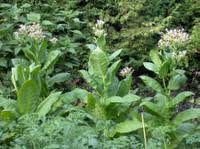

Tabac de Virginie, Tabac des paysans ou sauvage ou rustique, Tabac d'ornement

Tabac de Virginie, Tabac des paysans ou sauvage ou rustique, Tabac d'ornement (Nicotiana rustica et Nicotiana tabacum de la famille des Solanacées)
Attention : hautement toxique par ingestion pour le Korat !
Partie toxique pour les chats en général et le Korat en particulier :
Les feuilles aussi bien vertes que séchées.
Symptômes du processus pathologique :
Vomissements, diarrhées, détresse respiratoire, tremblements, arythmie cardiaque, coma.
Origine de la toxicité (principe actif) :
Nicotine ainsi que la nornicotine et l'anabasine (Tamus communis de la famille des Dioscoréacées).